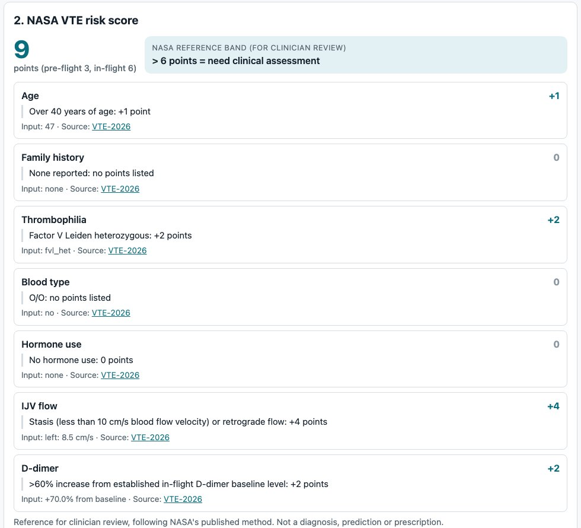
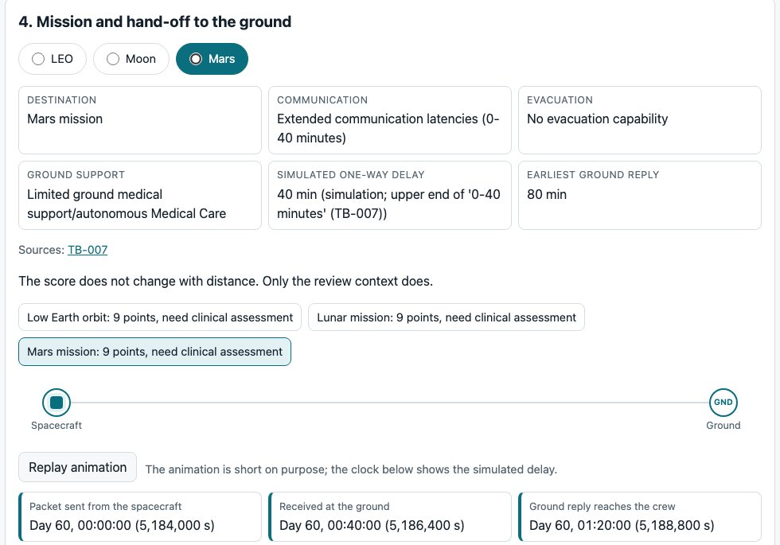
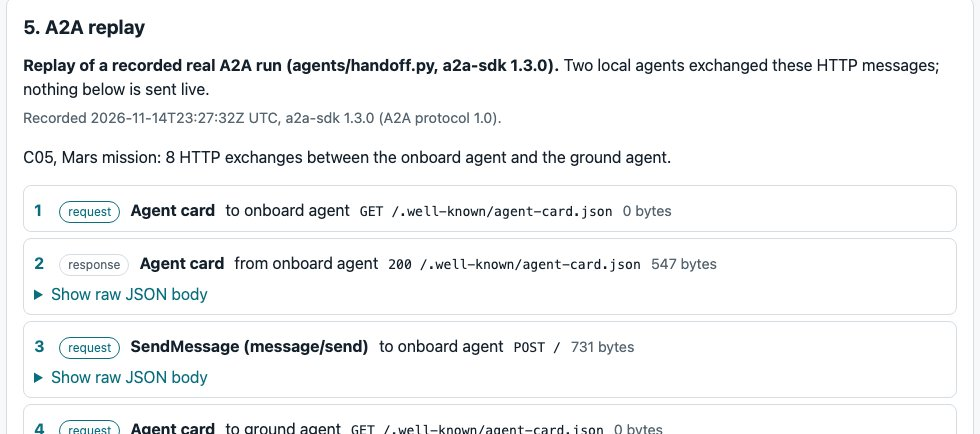

NASA Space Apps Challenge 2026 · Boston (Virtual)
NASA's new blood-clot score, checkable in orbit and on the ground
astronauts had a left jugular vein flow anomaly in flight
NASA VTE report, July 2026
Sources: NASA/SP-20260005258 REV1; OCHMO-TB-007

Synthetic case C05
> 6 points = need clinical assessment
Every point shows NASA's rule, the input and the source.
Reference for clinician review — not a diagnosis or prescription.

9 points at LEO, the Moon and Mars.
The ground's reply reaches the crew after:
Delay simulated at the upper end of NASA's published ranges.

Real A2A run (a2a-sdk 1.3.0), recorded and replayed in the app.
Limits: synthetic data; faithful to NASA's method, not a validated predictor.
App: drahmed7887.github.io/hack-nasa-space-apps
Repo: github.com/DrAhmed7887/hack-nasa-space-apps